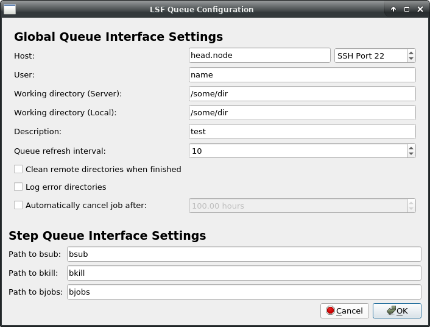
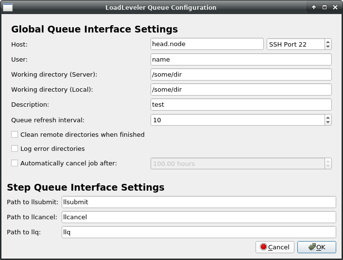
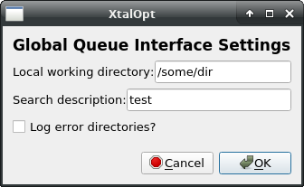

XtalOpt Tutorial
Contents
Launch XtalOpt
Open avogadro, go to the "Extensions" menu and select "XtalOpt".
Enter composition and restraints
The interface opens to the "Structure Limits" tab, shown above. We will use a 6 formula unit supercell of titanium dioxide for this tutorial, so enter "Ti6 O12" for the cell composition. We will assume that we know nothing about the system and use very loose restraints. Set all cell length minima to 1 angstrom and maxima to 20 angstrom. Constrain the angles to be between 60 and 120 degrees, and the volume from between 1 and 500 cubic angstrom. Specify a minimum interatomic distance of 0.5 angstrom. (Note that due to the angle adjustment described in the CPC 2010 publication, 60-120 degrees is the largest range of cell angles that XtalOpt will generate.)
Optimizer setup
XtalOpt currently supports the VASP, GULP, PWscf, CASTEP, and SIESTA codes for performing geometry optimizations. Each is detailed in its own section below.
VASP

On the next tab, load the optimization scheme by clicking the "Load Opt Scheme" button and selecting the "samples/vasp-xtalopt.scheme" file that is distributed with the source code. If you do not have a copy of the source code, the scheme file can be obtained by clicking the "Original Format" link at the bottom of the page here.
For more details on optimization schemes, see optschemes.
After loading the optimization scheme, XtalOpt will prompt for the POTCAR files to use. Select files appropriated for the prompted atom. XtalOpt will construct the POTCAR files on the local computer, and then copy them over to the cluster when the calculation is submitted. It is necessary to have the VASP POTCAR files for each atomic species located somewhere on the local computer. See the VASP manual for information on obtaining the POTCAR files.
Take a moment to look through each file for each optimization step. Notice that the INCAR template includes two user-specified values, %user2% and %user3% for the external pressure and the energy cutoff, respectively. By entering appropriate values in the "user2:" and "user3:" fields on the left, it is easy to update these values for all optimization steps.
Notice the other %keyword% values in the job.pbs templates. These are used to enter information that is specific to a search or structure when the actual input files are written prior to job submission. Click the "Help" button for a full listing of the available keywords.
XtalOpt expects VASP to use the default filenames, mainly POSCAR, CONTCAR, and OUTCAR.
GULP

On the next tab we choose GULP for the local optimizer and enter a template for GULP to use. Select "GULP" as the "Optimizer" and "xtal.gin" as "Template". Next, fill out the text field on the right with the following template:
opti conj conp switch_minimiser bfgs gnorm 0.5 cell %a% %b% %c% %alphaDeg% %betaDeg% %gammaDeg% frac %coordsFrac% species Ti 2.196 O -1.098 buck Ti Ti 31120.1 0.1540 5.25 15 O O 11782.7 0.2340 30.22 15 Ti O 16957.5 0.1940 12.59 15 lennard 12 6 Ti Ti 1 0 15 O O 1 0 15 Ti O 1 0 15
Alternatively, one can load the scheme file distributed with the source code under samples/gulp-TiO-xtalopt.scheme. If the source code is not available, the scheme file can be obtained by clicking the "Original Format" link at the bottom of the page here.
For more details on optimization schemes, see optschemes.
Note the "%" surrounding various keywords. These will be replaced by the structure-specific data when the optimizer is invoked for each structure. Click "Help" to view all of the keywords available. The number of optimization steps can be modified with the "Add/Resume" buttons. The "user" fields in the lower left corner allow users to specify their own keyword/value pairs, which is useful for making changes to multiple optimization steps at once. We will only be using one optimization step in this tutorial.
XtalOpt expects GULP to use the following filenames:
gulp < xtal.gin > xtal.got
PWscf

On the next tab, load the optimization scheme that is distributed with the source code under the samples/ directory. The scheme that we want is named "pwscf-xtalopt.scheme". If the source code is not available, the scheme file can be obtained by clicking the "Original Format" link at the bottom of the page here.
For more details on optimization schemes, see optschemes.
Each PWscf input file will need to be edited to specify:
- The pseudo_dir containing the pseudopotential files on the remote cluster, and
- The pseudopotentials for each atom (under ATOMIC_SPECIES)
Take a moment to look through each file for each optimization step.
Notice the %keyword% values in the job.pbs templates. These are used to enter information that is specific to a search or structure when the actual input files are written prior to job submission. Click the "Help" button for a full listing of the available keywords.
Be aware that every PWscf/CASTEP installation is different, and it is almost certain that the job.pbs file included with this scheme will not work on any cluster other than the Zurek group's "parity" cluster at SUNY Buffalo's Center for Computational Resources. It may take some experimentation to get jobs to submit successfully, and you may need to contact the mantainers of the cluster for assistance for information about MPI, executable locations, etc. Perhaps the easiest method to find the correct PBS script is to run some trial submissions by hand, and then replace the structure/search specific information with the appropriate keywords once a working script has been generated.
XtalOpt expects PWscf to use the following filenames:
pw.x < xtal.in > xtal.out
CASTEP

On the next tab, load the optimization scheme that is distributed with the source code under the samples/ directory. The scheme that we want is named "castep-xtalopt.scheme". If the source code is not available, the scheme file can be obtained by clicking the "Original Format" link at the bottom of the page here.
For more details on optimization schemes, see optschemes.
It is important to note that CASTEP input files require the "%" character to define blocks. The percent character is special in the XtalOpt input template parser to define keywords (see below). To insert a literal "%" into the input, use percent%.
E.g. Specification of the fractional coordinate block in the .cell template should look like:
Take a moment to look through each file for each optimization step.
Notice the %keyword% values in the job.pbs templates. These are used to enter information that is specific to a search or structure when the actual input files are written prior to job submission. Click the "Help" button for a full listing of the available keywords.
Be aware that every PWscf/CASTEP installation is different, and it is almost certain that the job.pbs file included with this scheme will not work on any cluster other than the Zurek group's "parity" cluster at SUNY Buffalo's Center for Computational Resources. It may take some experimentation to get jobs to submit successfully, and you may need to contact the mantainers of the cluster for assistance for information about MPI, executable locations, etc. Perhaps the easiest method to find the correct PBS script is to run some trial submissions by hand, and then replace the structure/search specific information with the appropriate keywords once a working script has been generated.
XtalOpt expects CASTEP to use the following filenames:
SIESTA
On the next tab we choose GULP for the local optimizer and enter a template for SIESTA to use. Select "SIESTA" as the "Optimizer" and "xtal.fdf" as "Template".
Next, fill out the text field on the right with the following template:
SystemName %description% SystemLabel %description%-%gen%x%id% NumberOfAtoms %numAtoms% NumberOfSpecies %numSpecies% %block Chemical_Species_Label %chemicalSpeciesLabel% %endblock Chemical_Species_Label PAO.BasisSize SZ # Lattice, coordinates, k-sampling AtomicCoordinatesFormat Fractional AtomicCoorFormatOut Ang %block% AtomicCoordinatesAndAtomicSpecies %atomicCoordsAndAtomicSpecies% %endblock% AtomicCoordinatesAndAtomicSpecies LatticeConstant 4.10 Ang %block% LatticeVectors %cellMatrixAngstrom% %endblock% LatticeVectors kgrid_cutoff 7. Ang # DFT, Grid, SCF XC.functional LDA # Exchange-correlation functional type XC.authors CA # Particular parametrization of xc func SpinPolarized .false. # Spin unpolarized calculation MeshCutoff 200. Ry # Equivalent planewave cutoff for the grid MaxSCFIterations 100 # Maximum number of SCF iterations per step DM.MixingWeight 0.3 # New DM amount for next SCF cycle DM.Tolerance 1.d-4 # Tolerance in maximum difference # between input and output DM DM.NumberPulay 3 # Number of SCF steps between pulay mixing # Eigenvalue problem: order-N or diagonalization SolutionMethod diagon # OrderN or Diagon ElectronicTemperature 5 K # Temp. for Fermi smearing # Molecular dynamics and relaxations MD.TypeOfRun cg # Type of dynamics:
Or load the optimization scheme by clicking the "Load Opt Scheme" button and selecting the "samples/siesta-xtalopt.scheme" file that is distributed with the source code.
For more details on optimization schemes, see optschemes.
After loading the optimization scheme, XtalOpt will prompt for the xtal.psf files to use. Select files appropriated for the prompted atom. XtalOpt will copy the individual files over to each structure directory when the calculation is submitted. See the SIESTA manual for information on obtaining the .psf files.
Notice the other %keyword% values in the xtal.fdf templates. These are used to enter information that is specific to a search or structure when the actual input files are written prior to job submission. Click the "Help" button for a full listing of the available keywords.
XtalOpt expects SIESTA to use the following filenames:
siesta < xtal.fdf > xtal.out
Queue setup
XtalOpt currently supports using the PBS, SGE, SLURM, LSF, and LoadLeveler queuing systems on remote SSH-accessible clusters, as well as an internal local queue that manages calculations on the user's workstation. Each queueing interface is detailed in its own section below.
Using a remote PBS cluster
Select "PBS" from the list of Queues, and then click the "Configure..." button. A new window will prompt for:
- host: The hostname of the PBS cluster's head node
- user: The username used to log into the cluster
- Working directory (Server): A directory that is readable/writable by "user" on the cluster, used when performing optimizations.
- Working directory (Local): A directory that is readable/writable by the current user on the local computer. This is where the final structures and resume files are written.
- Description: Used for the %description% keyword in input templates.
- Path to qsub: Where to find the qsub executable on the remote cluster. Note that if qsub is in the cluster's $PATH, setting this to just 'qsub' will work.
- Path to qdel: Where to find the qdel executable on the remote cluster. Note that if qdel is in the cluster's $PATH, setting this to just 'qdel' will work.
- Path to qstat: Where to find the qstat executable on the remote cluster. Note that if qstat is in the cluster's $PATH, setting this to just 'qstat' will work.
A new template, "job.pbs" is added to the list of available templates. This is the job submission script for PBS. This script should roughly follow this design:
For more details on optimization schemes, see optschemes.
Be aware that every installation is different, and it is almost certain that the job.pbs file included with this scheme will not work on any cluster other than the Zurek group's "parity" cluster at SUNY Buffalo's Center for Computational Resources. It may take some experimentation to get jobs to submit successfully, and you may need to contact the mantainers of the cluster for assistance or information about MPI, executable locations, etc. Perhaps the easiest method to find the correct PBS script is to run some trial submissions by hand, and then replace the structure/search specific information with the appropriate keywords once a working script has been generated.
A handy trick for monitoring jobs outside of XtalOpt is to include the following line in job.pbs:
This will name each job, for example, xtalSearch-3x4-2, where xtalSearch is a user-specified description of the search, and 3x4-2 means that it is the fourth structure in the third generation running its second optimization step.
Using a remote SGE cluster
Select "SGE" from the list of Queues, and then click the "Configure..." button. A new window will prompt for:
- host: The hostname of the SGE cluster's head node
- user: The username used to log into the cluster
- Working directory (Server): A directory that is readable/writable by "user" on the cluster, used when performing optimizations.
- Working directory (Local): A directory that is readable/writable by the current user on the local computer. This is where the final structures and resume files are written.
- Description: Used for the %description% keyword in input templates.
- Path to qsub: Where to find the qsub executable on the remote cluster. Note that if qsub is in the cluster's $PATH, setting this to just 'qsub' will work.
- Path to qdel: Where to find the qdel executable on the remote cluster. Note that if qdel is in the cluster's $PATH, setting this to just 'qdel' will work.
- Path to qstat: Where to find the qstat executable on the remote cluster. Note that if qstat is in the cluster's $PATH, setting this to just 'qstat' will work.
A new template, "job.sge" is added to the list of available templates. This is the job submission script for SGE. It may take some experimentation to get jobs to submit successfully, and you may need to contact the mantainers of the cluster for assistance or information about MPI, executable locations, etc. Perhaps the easiest method to find the correct SGE script is to run some trial submissions by hand, and then replace the structure/search specific information with the appropriate keywords once a working script has been generated.
For more details on optimization schemes, see optschemes.
Using a remote SLURM cluster

Select "SLURM" from the list of Queues, and then click the "Configure..." button. A new window will prompt for:
- host: The hostname of the SGE cluster's head node
- user: The username used to log into the cluster
- Working directory (Server): A directory that is readable/writable by "user" on the cluster, used when performing optimizations.
- Working directory (Local): A directory that is readable/writable by the current user on the local computer. This is where the final structures and resume files are written.
- Description: Used for the %description% keyword in input templates.
- Path to sbatch: Where to find the sbatch executable on the remote cluster. Note that if sbatch is in the cluster's $PATH, setting this to just 'sbatch' will work.
- Path to scancel: Where to find the scancel executable on the remote cluster. Note that if scancel is in the cluster's $PATH, setting this to just 'scancel' will work.
- Path to squeue: Where to find the squeue executable on the remote cluster. Note that if squeue is in the cluster's $PATH, setting this to just 'squeue' will work.
A new template, "job.slurm" is added to the list of available templates. This is the job submission script for SLURM. It may take some experimentation to get jobs to submit successfully, and you may need to contact the mantainers of the cluster for assistance or information about MPI, executable locations, etc. Perhaps the easiest method to find the correct SLURM script is to run some trial submissions by hand, and then replace the structure/search specific information with the appropriate keywords once a working script has been generated.
For more details on optimization schemes, see optschemes.
Using a remote LSF cluster
Select "LSF" from the list of Queues, and then click the "Configure..." button. A new window will prompt for:
- host: The hostname of the LSF cluster's head node
- user: The username used to log into the cluster
- Working directory (Server): A directory that is readable/writable by "user" on the cluster, used when performing optimizations.
- Working directory (Local): A directory that is readable/writable by the current user on the local computer. This is where the final structures and resume files are written.
- Description: Used for the %description% keyword in input templates.
- Path to bsub: Where to find the bsub executable on the remote cluster. Note that if bsub is in the cluster's $PATH, setting this to just 'bsub' will work.
- Path to bkill: Where to find the bkill executable on the remote cluster. Note that if bkill is in the cluster's $PATH, setting this to just 'bkill' will work.
- Path to bjobs: Where to find the bjobs executable on the remote cluster. Note that if bjobs is in the cluster's $PATH, setting this to just 'bjobs' will work.
A new template, "job.lsf" is added to the list of available templates. This is the job submission script for LSF. It may take some experimentation to get jobs to submit successfully, and you may need to contact the mantainers of the cluster for assistance or information about MPI, executable locations, etc. Perhaps the easiest method to find the correct LSF script is to run some trial submissions by hand, and then replace the structure/search specific information with the appropriate keywords once a working script has been generated.
For more details on optimization schemes, see optschemes.
Using a remote LoadLeveler cluster
Select "LoadLeveler" from the list of Queues, and then click the "Configure..." button. A new window will prompt for:
- host: The hostname of the LoadLeveler cluster's head node
- user: The username used to log into the cluster
- Working directory (Server): A directory that is readable/writable by "user" on the cluster, used when performing optimizations.
- Working directory (Local): A directory that is readable/writable by the current user on the local computer. This is where the final structures and resume files are written.
- Description: Used for the %description% keyword in input templates.
- Path to llsubmit: Where to find the llsubmit executable on the remote cluster. Note that if llsubmit is in the cluster's $PATH, setting this to just 'llsubmit' will work.
- Path to llcancel: Where to find the llcancel executable on the remote cluster. Note that if llcancel is in the cluster's $PATH, setting this to just 'llcancel' will work.
- Path to llq: Where to find the llq executable on the remote cluster. Note that if llq is in the cluster's $PATH, setting this to just 'llq' will work.
A new template, "job.ll" is added to the list of available templates. This is the job submission script for LoadLeveler. It may take some experimentation to get jobs to submit successfully, and you may need to contact the mantainers of the cluster for assistance or information about MPI, executable locations, etc. Perhaps the easiest method to find the correct LoadLeveler script is to run some trial submissions by hand, and then replace the structure/search specific information with the appropriate keywords once a working script has been generated.
For more details on optimization schemes, see optschemes.
Running optimizations locally
Select "Local" from the list of Queues, and then click the configure button. A new window will prompt for:
- Local working directory: A directory that is readable/writable by the current user on the local computer. This is where the final structures and resume files are written.
If the optimizer's executable (vasp, gulp, pw.x, castep, etc) is not in your system path, you will need to specify the location of the executable by clicking the "Configure..." button next to the optimizer selection menu.
For more details on optimization schemes, see optschemes.
What is written to the local directory?
A directory for each structure is created at
that will contain input, output, and data files specific to each structure. Two additional files are also written to the local filesystem:
which contains save/resume information to continue a session that has been stopped, and
which stores a list of all structures sorted by increasing enthalpy. The latter file is handy for offline analysis, since there is no need to open XtalOpt to find the most stable structures of a previous search.
Search Settings
In the "Search Settings" tab, most of the default settings should suffice (See CPC 2010 publication). We arbitrarily set the initial structures to 20 and the continuous structures to 5, although these may need to be adjusted based on available resources. We will not specify initial seeds, but the option to do so exists on this screen.
It is not neccessary to limit the number of running jobs unless running locally, as the PBS queue on the cluster will manage job control for us. If running locally, set the job limit no higher than [number of available processor cores] - 1 (e.g. for a quadcore processor, allow three jobs to run simultaneously). This allows one core to remain free for the system to run.
"Begin"

XtalOpt has everything it needs to start its search at this point; click the "Begin" button in the lower right corner of the application to tell it to start the search algorithm. A progress bar appears as the random first generation is created. Switch to the "Progress" tab and 20 entries will appear, all with a status of "Waiting for Optimization". Click "Refresh" on this tab to begin the local optimizations. From here, XtalOpt will continue to run without user input, starting new optimizations and generating new structures until it is stopped by the user.
Monitor progress

As XtalOpt performs the search, the progress table continuously updates, providing information about each structure. We see individuals in various stages of completion: most are optimized (in yellow), structure 2x7 has been automatically marked as a duplicate (dark green) of structure 3x3 and removed from the breeding pool, structure 4x4 is currently undergoing a local optimization (light green), while structure 4x5 is waiting to be optimized (blue).
Other useful information is displayed about each structure, such as the time spent in optimization, the optimized enthalpy, the cell volume, spacegroup, and each structure's ancestry (i.e. parent(s) and parameters for the genetic operator that generated it). A status bar on the bottom of the window shows the number of structures that are optimized, running, and failing at any given time. This information is visible regardless of which tab is currently being viewed.
An additional feature of the progress table is the ability to immediately visualize any of the individuals in the Avogadro main window – simply clicking on a row in this table will display the three-dimensional structure in Avogadro, where it can be visualized, modified, or exported. If the user would like to add a bit of "intelligent design" to the evolutionary process, a structure can be modified and then resubmitted using a context (right-click) menu from the progress table. The context menu provides tools to (un)kill a structure, resubmit for local optimization at an arbitrary optimization step, or replace a problematic structure with a new, random individual.
View trends

Another visualization and analysis tool available during the search is the interactive plot. The plot is capable of investigating trends in the search by plotting a point for each individual using structure number, generation number, enthalpy, energy, $PV$ enthalpy term, lattice parameters, or cell volume on either axis. This powerful feature allows the user to visualize complex relationships present in the generated structures. E.g., a plot of enthalpy vs. structure number provides an overview of the search's progress. Or, recalling that H = U + PV, plotting enthalpy vs. PV enthalpy term or energy lends insight into whether the enthalpy (H) is dominated by atomic interactions (U) or cell parameters (PV). Further information is available by labeling the points with the individual's spacegroup number, Hermann Mauguin spacegroup symbol, enthalpy, energy, PV term, volume, generation, or index number.
A particularly useful plot is that of enthalpy vs. cell volume, as shown above. From this view, we see a general trend that enthalpy increases with volume (the effect is much more pronounced for systems at higher pressures), and also that below a certain volume enthalpy rises sharply. From this data set, we see that there is a cluster of very low enthalpy structures with cell volumes around 180 cubic angstroms. Armed with this data, we can update the starting volume on the Structure Limits tab mid-run to reflect this new piece of information that the search has provided us. Many of the other parameters governing structure generation and algorithm specifics can be similarly modified during a search without the need to restart the algorithm.
The plot is also interactive; zooming and panning are possible using simple mouse controls. Clicking on a structure's point on the plot will load it in the main Avogadro window, allow all the same functionality as described above in Monitor progress.
Saving and Resuming Sessions in XtalOpt

How to save your session
XtalOpt will write a small file named xtalopt.state to its working directory that contains the information necessary to resume the session at a later time. The file can be rewritten manually by clicking the "Save Session" button highlighted above, and XtalOpt will automatically save the session every time a structure is updated.
XtalOpt will also write a file "structure.state" in each candidate structure's directory. This file stores XtalOpt-specific information about the structure.
How to resume your session
To resume a session, simply click "Resume stored session" (highlighted above) and select the xtalopt.state file in the working directory of the session you would like to resume. XtalOpt will then begin to load the structures and search parameters. You can monitor the progress with the progress bar that appears at the bottom of the window.
While the structures are loading, you may encounter errors that say:
Error, no (or not appropriate for [OPTIMIZER]) xtal data in [DIRECTORY]. This could be a result of resuming a structure that has not yet done any local optimizations. If so, safely ignore this message.
As mentioned in the message, these can typically be ignored if it only happens for a handful of structures. This occurs when a structure has been generated in XtalOpt, but it has not completed any geometry optimizations so there are no output files from which to load the geometry. If it happens for a significant number of structures (or structures that are known to have completed at least one geometry optimization step), the output files from the optimizer may be missing or corrupt.
After resuming a session, XtalOpt will ask if you would like to continue the search or enter read-only mode. Read-only mode will not generate new structures or submit geometry optimizations.
- Note:
- If you are considering resuming a read-only session, take a look at the results.txt file in the working directory. It contains a list of all structures, sorted by enthalpy, with additional useful information. This can save some time when trying to locate the most stable structure of an old search.
The working directories for XtalOpt are relocatable, meaning that the directory containing xtalopt.state and the [gen]x[id] structure folders may be moved, tarred, zipped, etc. and still be resumed at a later time from a different location on the filesystem, or even a different computer.
Generated on Sun Apr 26 2015 01:32:48 for My Project by
 1.8.9.1
1.8.9.1